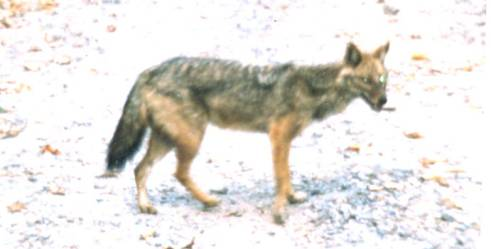

<head>
<meta http-equiv="Content-Type" content="text/html; charset=windows-1252">
<meta name="GENERATOR" content="Microsoft FrontPage 4.0">
<meta name="ProgId" content="FrontPage.Editor.Document">
<title>New Page 1</title>
<meta http-equiv="Content-Type" content="text/html; charset=windows-1252">
<meta name="GENERATOR" content="Microsoft FrontPage 4.0">
<meta name="ProgId" content="FrontPage.Editor.Document">
<title>ECONOMICALLY IMPORTANT PLANTS OF INDIA compiled by K</title>
<meta http-equiv="Content-Type" content="text/html; charset=windows-1252">
<meta name="GENERATOR" content="Microsoft FrontPage 4.0">
<meta name="ProgId" content="FrontPage.Editor.Document">
<title>ECONOMICALLY IMPORTANT PLANTS OF INDIA</title>
<meta http-equiv="Content-Type" content="text/html; charset=windows-1252">
<meta name="GENERATOR" content="Microsoft FrontPage 4.0">
<meta name="ProgId" content="FrontPage.Editor.Document">
<title>New Page 1</title>
<META HTTP-EQUIV="CONTENT-TYPE" CONTENT="text/html; charset=windows-1252">
<TITLE>Aegle marmelos </TITLE>
<META NAME="GENERATOR" CONTENT="Microsoft FrontPage 4.0">
<META NAME="CREATED" CONTENT="20010726;17265013">
<META NAME="CHANGEDBY" CONTENT="L.Sowmya">
<META NAME="CHANGED" CONTENT="20020726;13003551">
<META NAME="DESCRIPTION" CONTENT="Economically Important Plants">
<META NAME="KEYWORDS" CONTENT="Abies pindrow">
<META NAME="ProgId" CONTENT="FrontPage.Editor.Document">
<STYLE>
	<!--
		P { color: #2c9a97 }
	-->
	</STYLE>
<meta name="Microsoft Theme" content="none">
<link>
</head>

<body LANG="en-US" bgcolor="#CCCCCC" text="#009999">
<P><A NAME="begin"></A>
</P>
<table border="1" width="100%">
  <tr>
    <td width="100%" bgcolor="#1658BC">
      <P ALIGN=CENTER><b><font face="Verdana" size="6" color="#FFFFFF">Digitized
      Inventory of Animal Resources: Mammalia&nbsp;</font></b> <font color="#FFFFFF"><br>
      <b>
      Principal Investigator: Dr. R. J. B Alfred, Co-Investigator: Dr. Rama Krishna, Contributed by:
      Dr. M.S. Pradhan</b></font><br>
      </P>
    </td>
  </tr>
</table>
<p ALIGN="CENTER">&nbsp;</p>
<p ALIGN="CENTER">&nbsp;</p>
<P ALIGN=center><b><font size="6" face="Comic Sans MS" color="#009999">&nbsp;&nbsp;</font><font color="#808000"><b style="mso-bidi-font-weight:normal"><i style="mso-bidi-font-style:normal"><span style="mso-bidi-font-size: 12.0pt; mso-fareast-font-family: Times New Roman; mso-bidi-font-family: Times New Roman; mso-ansi-language: EN-US; mso-fareast-language: EN-US; mso-bidi-language: AR-SA"><font face="Arial" size="6">Canis
aureus </font></span></i><font face="Arial" size="6"><span style="mso-bidi-font-size: 12.0pt; mso-fareast-font-family: Times New Roman; mso-bidi-font-family: Times New Roman; mso-ansi-language: EN-US; mso-fareast-language: EN-US; mso-bidi-language: AR-SA">Linnaeus</span></font></b><font face="Arial" size="6">&nbsp;</font></font><font size="6" face="Comic Sans MS" color="#009999">&nbsp;&nbsp;&nbsp;&nbsp;&nbsp;&nbsp;&nbsp;&nbsp;&nbsp;&nbsp;&nbsp;&nbsp;&nbsp;&nbsp;</font></b></P>
<P ALIGN=LEFT><A HREF="#Taxonomic Details"><FONT FACE="Comic Sans MS">Taxonomic 
  Details</FONT> </A><FONT FACE="Comic Sans MS"><BR>
  ----- </FONT><A HREF="#Scientific Name"><FONT FACE="Comic Sans MS">Scientific Name</FONT></A><FONT FACE="Comic Sans MS"><BR>
  ----- </FONT><A HREF="#Classification"><FONT FACE="Comic Sans MS">Classification</FONT></A><FONT FACE="Comic Sans MS"><BR>
  ----- </FONT><A HREF="#Synonyms"><FONT FACE="Comic Sans MS">Synonyms</FONT></A><FONT FACE="Comic Sans MS"><BR>
  ----- </FONT><A HREF="#Common Names"><FONT FACE="Comic Sans MS">Common Names</FONT></A><FONT FACE="Comic Sans MS"><BR>
  </FONT><A HREF="#Other Biological Details"><FONT FACE="Comic Sans MS">Other 
  Biological Details</FONT></A><FONT FACE="Comic Sans MS"><BR>
  ----- </FONT><A HREF="#Habit and Habitat"><FONT FACE="Comic Sans MS">Habit and 
  Habitat</FONT></A><FONT FACE="Comic Sans MS"><BR>
  ----- </FONT><A HREF="#Distribution"><FONT FACE="Comic Sans MS">Distribution</FONT></A><FONT FACE="Comic Sans MS"><BR>
  ---------- </FONT><A HREF="#Extend of Occurance"><FONT FACE="Comic Sans MS">Extent of
Occurrence</FONT></A><FONT FACE="Comic Sans MS"><BR>
  ---------- </FONT><A HREF="#Area of occurance"><FONT FACE="Comic Sans MS">Area of
</FONT></A><A HREF="#Area of occurance"><font face="Comic Sans MS">occurrence</font></A><FONT FACE="Comic Sans MS"><BR>
  ---------- </FONT><A HREF="#Altitude:"><FONT FACE="Comic Sans MS">Altitude</FONT></A><FONT FACE="Comic Sans MS"><BR>
  ---------- </FONT><A HREF="#Population:"><FONT FACE="Comic Sans MS">Population</FONT></A><FONT FACE="Comic Sans MS"><BR>
  ----- </FONT>
  <A HREF="#Conservation Status:"><FONT FACE="Comic Sans MS">Conservation Status</FONT></A><FONT FACE="Comic Sans MS"><BR>
  ----- </FONT>
  <A HREF="#Diagnostic Features"><FONT FACE="Comic Sans MS">Diagnostic 
  Features</FONT></A><FONT FACE="Comic Sans MS"><BR>
  ----- </FONT>
<a HREF="#Breeding system"><FONT FACE="Comic Sans MS">Breeding system</FONT></a><FONT FACE="Comic Sans MS"><BR>
  </FONT><A HREF="#Miscellaneous Information"><FONT FACE="Comic Sans MS">Miscellaneous 
  Information</FONT></A><FONT FACE="Comic Sans MS"><BR>
  </FONT><A HREF="#Literature"><FONT FACE="Comic Sans MS">Literature</FONT></A></P>
<HR SIZE=3 COLOR="#0000ff">
<P><A NAME="Taxonomic Details"></A><FONT SIZE=6><FONT FACE="Monotype Corsiva"><FONT COLOR="#1658bc"><u>Taxonomic 
  Details</u></FONT></FONT></FONT> </P>
<HR SIZE=3 COLOR="#0000ff">
<P><A NAME="Scientific Name"></A><A NAME="Classification"></A><A NAME="Synonyms"></A><A NAME="Common Names"></A> 
  <FONT FACE="Comic Sans MS, sans-serif"><U>Scientific Name</U> :&nbsp;</FONT>&nbsp;&nbsp;&nbsp;&nbsp;&nbsp;&nbsp;&nbsp;&nbsp;<b><font color="#808000"><b style="mso-bidi-font-weight:normal"><i style="mso-bidi-font-style:normal"><span style="mso-bidi-font-size: 12.0pt; mso-fareast-font-family: Times New Roman; mso-bidi-font-family: Times New Roman; mso-ansi-language: EN-US; mso-fareast-language: EN-US; mso-bidi-language: AR-SA"><font face="Arial" size="6">Canis
aureus </font></span></i><font face="Arial" size="6"><span style="mso-bidi-font-size: 12.0pt; mso-fareast-font-family: Times New Roman; mso-bidi-font-family: Times New Roman; mso-ansi-language: EN-US; mso-fareast-language: EN-US; mso-bidi-language: AR-SA">Linnaeus</span></font></b><font face="Arial" size="6">&nbsp;</font></font></b></P>
<p class="MsoNormal" style="margin-left:1.75in;text-align:justify">&nbsp;</p>
<P><font face="Comic Sans MS" size="3"><U>Classification</U><b><U>:</U></b></font></P>
<blockquote>
  <blockquote>
    <blockquote>
      <blockquote>
        <blockquote>
          <blockquote>
<P><span style="mso-bidi-font-size: 12.0pt; color: black"><font size="4" face="Arial">Order:<i style="mso-bidi-font-style:normal">&nbsp;&nbsp;&nbsp;</i><i style="mso-bidi-font-size: 12.0pt; color: black">&nbsp;</i><i style="mso-bidi-font-style:normal">&nbsp;&nbsp;&nbsp;</i><i style="mso-bidi-font-size: 12.0pt; color: black">&nbsp;&nbsp;
</i><span style="mso-bidi-font-style: normal">Carnivora</span><i style="mso-bidi-font-style:normal">
</i><o:p>
</o:p>
</font></span></P>
<P><span style="mso-bidi-font-size: 12.0pt; color: black"><font size="4" face="Arial">Family:<i style="mso-bidi-font-style:normal">&nbsp;&nbsp;&nbsp;</i><i style="mso-bidi-font-size: 12.0pt; color: black">&nbsp;</i><i style="mso-bidi-font-style:normal">&nbsp;&nbsp;&nbsp;</i><i style="mso-bidi-font-size: 12.0pt; color: black">&nbsp;</i><i style="mso-bidi-font-size: 12.0pt; color: black">
</i><i style="mso-bidi-font-style:normal">C</i><i style="mso-bidi-font-style: normal; mso-bidi-font-size: 12.0pt; color: black">an</i><i style="mso-bidi-font-style:normal">idae</i><o:p>
</o:p>
</font></span></P>
          </blockquote>
        </blockquote>
      </blockquote>
    </blockquote>
  </blockquote>
</blockquote>
<P><font face="Comic Sans MS, sans-serif" size="3"><BR>
  <U>Synonyms</U>:<i style="mso-bidi-font-style:normal"><span style="font-size:9.0pt;mso-bidi-font-size:12.0pt;font-family:Verdana;
mso-fareast-font-family:&quot;Times New Roman&quot;;mso-bidi-font-family:&quot;Times New Roman&quot;;
color:black;mso-ansi-language:EN-US;mso-fareast-language:EN-US;mso-bidi-language:
AR-SA">:&nbsp;</span></i></font><span style="mso-bidi-font-size: 12.0pt; mso-fareast-font-family: Times New Roman; mso-bidi-font-family: Times New Roman; color: black; mso-ansi-language: EN-US; mso-fareast-language: EN-US; mso-bidi-language: AR-SA; mso-bidi-font-style: normal"><font face="Comic Sans MS, sans-serif" size="3"><i style="mso-bidi-font-style: normal; mso-bidi-font-size: 12.0pt; mso-fareast-font-family: Times New Roman; mso-bidi-font-family: Times New Roman; color: black; mso-ansi-language: EN-US; mso-fareast-language: EN-US; mso-bidi-language: AR-SA; font-size: 9.0pt; font-family: Verdana">&nbsp;&nbsp;&nbsp;&nbsp;&nbsp;&nbsp;&nbsp;&nbsp;&nbsp;&nbsp;&nbsp;&nbsp;&nbsp;&nbsp;&nbsp;&nbsp;&nbsp;&nbsp;&nbsp;&nbsp;&nbsp;&nbsp;&nbsp;&nbsp;&nbsp;&nbsp;&nbsp;&nbsp;&nbsp;&nbsp;&nbsp;&nbsp;&nbsp;&nbsp;&nbsp;&nbsp;
</i></font><font face="Arial" size="4"><i style="mso-bidi-font-style: normal; mso-bidi-font-size: 12.0pt; mso-fareast-font-family: Times New Roman; mso-bidi-font-family: Times New Roman; color: black; mso-ansi-language: EN-US; mso-fareast-language: EN-US; mso-bidi-language: AR-SA">Number of synonyms reported by Alfred et al., 2002</i></font></span></P>
<P><font face="Comic Sans MS, sans-serif" size="3"><BR>
  <U>Common Names</U><SPAN STYLE="text-decoration: none">:&nbsp;&nbsp;&nbsp;&nbsp;&nbsp;&nbsp;&nbsp;&nbsp;&nbsp;&nbsp;&nbsp;&nbsp;&nbsp;</SPAN></font>&nbsp;&nbsp;&nbsp;<font face="Comic Sans MS, sans-serif" size="3"><span style="text-decoration: none">&nbsp;&nbsp;&nbsp;&nbsp;</span></font><font face="Arial" size="4"><span style="mso-bidi-font-size: 12.0pt; color: black">Asiatic Jackal,
Golden Jackal, Jackal<o:p>
 </span></font><span style="font-size:9.0pt;mso-bidi-font-size:
12.0pt;color:black">
</o:p>
</span>
</P>
<blockquote>
  <blockquote>
    <blockquote>
      <blockquote>
        <blockquote>
<p class="MsoNormal"><font face="Arial" size="4"><span style="mso-bidi-font-size: 12.0pt">&nbsp;<i style="mso-bidi-font-style:
normal"><span style="font-size:9.0pt;mso-bidi-font-size:12.0pt;font-family:
Verdana;color:black">Regional Names:</span></i><span style="font-size:9.0pt;
mso-bidi-font-size:12.0pt;font-family:Verdana;color:black">&nbsp;Hindi: Gidar or
Sial or Phial; Marathi: Kolha; Tamil: Kalla Nari; Telugu: Nakka; Malyalam:
Karaken, Nari; Assamese: Hiyali; Bengali: Shiyal, Srigal.<o:p>
&nbsp;</span></span></font></p>
        </blockquote>
      </blockquote>
    </blockquote>
  </blockquote>
</blockquote>
<P>&nbsp;
</P>
<P ALIGN=RIGHT><A HREF="#begin"><U><FONT FACE="Comic Sans MS">Back to
Top</FONT></U></A></P>
<HR SIZE=3 COLOR="#0000ff">
<P><A NAME="Other Biological Details"></A><FONT SIZE=3><FONT SIZE=6><FONT FACE="Monotype Corsiva"><FONT COLOR="#1658bc"><u>Other 
  Biological Details</u></FONT></FONT></FONT></FONT> 
</P>
<p class="MsoNormal" style="text-align:justify"><font face="Arial" size="4"><span style="mso-bidi-font-size: 12.0pt"><i style="mso-bidi-font-style:
normal"><b><font color="#008000">Threats:&nbsp;</font></b></i><span style="font-size:9.0pt;
mso-bidi-font-size:12.0pt;font-family:Verdana;color:black"> Interspecific competition, Disease, Human Interference, Loss of Habitat, Trade, Pollution,
Hunting, Poisoning, Accidental deaths, deaths due to dreaded disease like rabies.;&nbsp;<i style="mso-bidi-font-style:normal">Effect of threats on
population (Perceived or inferred)</i>:&nbsp;Declining<o:p>
</o:p>
</span></span></font></p>
<p class="MsoNormal"><font face="Arial" size="4"><span style="mso-bidi-font-size: 12.0pt"><b><font color="#008000">&nbsp;<i style="mso-bidi-font-style:
normal">Trade:&nbsp;</i></font></b><span style="font-size:9.0pt;
mso-bidi-font-size:12.0pt;font-family:Verdana;color:black"> Local, Domestic and
International;&nbsp;<i style="mso-bidi-font-style:normal">Parts in trade</i>:&nbsp;Skin,
Fur, Body Parts (Pradhan, 1997).;&nbsp;<i style="mso-bidi-font-style:normal">Effect
of trade on population (Perceived or inferred)</i>:&nbsp;Declining<o:p>
</o:p>
</span></span></font></p>
<P>&nbsp; 
</P>
<HR SIZE=3 COLOR="#0000ff">
<P STYLE="margin-bottom: 0cm"><A NAME="Habit and Habitat"></A><U><FONT FACE="Comic Sans MS">HABIT 
  &amp; HABITAT</FONT></U></P>
<p class="MsoNormal" style="text-align:justify"><font face="Arial" size="4" color="#000000"><span style="mso-bidi-font-size: 12.0pt">Like wolf, the Jackal
is adaptable to live in any environment. It's long Drawn eerie howling at dusk
or dawn is most familiar. It is well established near hill stations and villages
on plains. It is nocturnal in habit and comes out at dusk and retires at dawn.
They are seen on plain and are equally comfortable on forested hills. Jackals
are intelligent and they feed on carrion, small animals, birds and even insects
and fruits. However, bulk diet consists of rodents and reptiles obtained through
hunting. They may even attack melon patches and sugarcane fields. <o:p>
</o:p>
</span></font></p>
<p class="MsoNormal" style="text-align:justify"><font face="Arial" size="4" color="#000000"><span style="mso-bidi-font-size: 12.0pt">&nbsp;The jackal
lives in a small and/or large packs. They under take fairly long migrations.
Jackals breed throughout the year and litter consists of usually four young
ones. Jackals takes shelter in holes in the ground, amongst ruins or in dense
tall grass and/or scrubs. Though they are also scavenger in habit they do not
hesitate to attack and prey upon the individuals of the prey species.<o:p>
</o:p>
</span></font></p>
<p class="MsoNormal"><span style="mso-bidi-font-size: 12.0pt"><font face="Arial" size="4"><font color="#000000">&nbsp;</font><i style="mso-bidi-font-style:normal"><span style="font-size:9.0pt;mso-bidi-font-size:
12.0pt;font-family:Verdana;mso-fareast-font-family:&quot;Times New Roman&quot;;
mso-bidi-font-family:&quot;Times New Roman&quot;;color:black;mso-ansi-language:EN-US;
mso-fareast-language:EN-US;mso-bidi-language:AR-SA"><font face="Arial" size="4" color="#008000"><b>Habitat Structure:</b></font></span></i><font color="#000000"><span style="mso-bidi-font-size: 12.0pt; font-family: Verdana; mso-fareast-font-family: Times New Roman; mso-bidi-font-family: Times New Roman; color: black; mso-ansi-language: EN-US; mso-fareast-language: EN-US; mso-bidi-language: AR-SA">&nbsp;Any type of forest and urban, semi-urban, rural environments.
Adaptable to any favourable habitat.</span></font></font></span></p>
<p><font color="#000000" size="4"><span style="font-family: Times New Roman; mso-fareast-font-family: Times New Roman; mso-ansi-language: EN-US; mso-fareast-language: EN-US; mso-bidi-language: AR-SA">&nbsp;&nbsp;&nbsp;&nbsp;&nbsp;&nbsp;&nbsp;&nbsp;&nbsp;&nbsp;&nbsp;&nbsp;&nbsp;&nbsp;&nbsp;&nbsp;&nbsp;&nbsp;&nbsp;&nbsp;&nbsp;&nbsp;&nbsp;
</span></font></p>
<p align=RIGHT style="margin-bottom: 0cm"><font face="Comic Sans MS" size="3"><a href="#begin">Back 
  to Top</a></font></p>
<P STYLE="margin-bottom: 0cm">&nbsp;</P>
<P><font size="3"><A NAME="Distribution"></A><A NAME="Extend of Occurance"></A><A NAME="Area of occurance:"></A><A NAME="Altitude:"></A><A NAME="Population:"></a><A NAME="Conservation status:"></A> 
  <FONT FACE="Comic Sans MS"><U>Distribution</U>:&nbsp;&nbsp;&nbsp;&nbsp;&nbsp;&nbsp;&nbsp;&nbsp;</FONT></font><font face="Arial" size="4">&nbsp;&nbsp;&nbsp;
<span style="mso-bidi-font-size: 12.0pt; font-family: Verdana; mso-fareast-font-family: Times New Roman; mso-bidi-font-family: Times New Roman; color: black; mso-ansi-language: EN-US; mso-fareast-language: EN-US; mso-bidi-language: AR-SA">Almost throughout India within Indian Limits.</span></font></P>
<P>&nbsp;&nbsp;&nbsp;<span style="font-size: 9.0pt; mso-bidi-font-size: 12.0pt; font-family: Verdana; mso-fareast-font-family: Times New Roman; mso-bidi-font-family: Times New Roman; color: black; mso-ansi-language: EN-US; mso-fareast-language: EN-US; mso-bidi-language: AR-SA"><font face="Comic Sans MS" size="3">&nbsp;&nbsp;&nbsp;&nbsp;&nbsp;&nbsp;&nbsp;&nbsp;&nbsp;&nbsp;&nbsp;&nbsp;&nbsp;&nbsp;&nbsp;&nbsp;&nbsp;&nbsp;&nbsp;&nbsp;&nbsp;&nbsp;&nbsp;&nbsp;&nbsp;&nbsp;&nbsp;&nbsp;&nbsp;&nbsp;&nbsp;&nbsp;&nbsp;&nbsp;&nbsp;&nbsp;&nbsp;&nbsp;&nbsp;&nbsp;&nbsp;&nbsp;&nbsp;&nbsp;&nbsp;&nbsp;&nbsp;&nbsp;</font></span><span style="mso-bidi-font-size: 12.0pt; mso-fareast-font-family: Times New Roman; mso-bidi-font-family: Times New Roman; color: black; mso-ansi-language: EN-US; mso-fareast-language: EN-US; mso-bidi-language: AR-SA"><font face="Arial" size="4"><i style="mso-bidi-font-style:normal">No.</i><i style="mso-bidi-font-style: normal; mso-bidi-font-size: 12.0pt; mso-fareast-font-family: Times New Roman; mso-bidi-font-family: Times New Roman; color: black; mso-ansi-language: EN-US; mso-fareast-language: EN-US; mso-bidi-language: AR-SA">
</i><i style="mso-bidi-font-style:normal">of Locations:&nbsp;</i>Many;&nbsp;<i style="mso-bidi-font-style:normal">Type:&nbsp;</i>Isolated</font></span></P>
<P><font face="Comic Sans MS" size="3"><U>Extent of </U><u>Occurrence&nbsp;</u><font color="#000000">&nbsp;</font></font><font face="Comic Sans MS" size="4" color="#000000">&nbsp;&nbsp;&nbsp;&nbsp;&nbsp;&nbsp;&nbsp;&nbsp;&nbsp;&nbsp;&nbsp;&nbsp;&nbsp;&nbsp;</font><font face="Arial" size="4" color="#000000"><span style="mso-bidi-font-size: 12.0pt; color: black">greater than 20000
sq.kms.<o:p>
</span></font><span style="font-size:9.0pt;
mso-bidi-font-size:12.0pt;font-family:Verdana;color:black"><font face="Comic Sans MS" size="4" color="#000000">
</o:p>
</font>
</span></P>
<P STYLE="margin-bottom: 0cm"><U><font face="Comic Sans MS" size="3">Area of occurrence:</font></U><font face="Comic Sans MS" size="4" color="#000000">&nbsp;&nbsp;&nbsp;&nbsp;&nbsp;&nbsp;&nbsp;&nbsp;&nbsp;&nbsp;&nbsp;&nbsp;&nbsp;&nbsp;&nbsp;&nbsp;&nbsp;</font><font face="Arial"><span style="mso-bidi-font-size: 12.0pt; color: black"><font size="4" color="#000000">greater than 2001
sq.kms.<o:p>
</o:p>
 </font></span><font size="4" color="#000000">&nbsp;&nbsp;&nbsp;&nbsp;&nbsp;</font></font></P>
<P STYLE="margin-bottom: 0cm"><font face="Comic Sans MS" size="3"><U>Altitude:&nbsp;&nbsp;&nbsp;</U>&nbsp;&nbsp;&nbsp;&nbsp;&nbsp;&nbsp;&nbsp;&nbsp;&nbsp;&nbsp;&nbsp;&nbsp;&nbsp;&nbsp;&nbsp;&nbsp;&nbsp;&nbsp;&nbsp;&nbsp;&nbsp;&nbsp;&nbsp;&nbsp;&nbsp;&nbsp;&nbsp;&nbsp;&nbsp;&nbsp;&nbsp;&nbsp;</font><font face="Arial" size="4">
<span style="mso-bidi-font-size: 12.0pt; color: black">up to 3660 m<o:p>
</o:p>
</span></font><font face="Comic Sans MS" size="3"><BR>
  <BR>
  <U>Population:</U></font><font color="#000000" face="Comic Sans MS" size="4">&nbsp;&nbsp;&nbsp;&nbsp;&nbsp;&nbsp;&nbsp;&nbsp;&nbsp;&nbsp;&nbsp;&nbsp;&nbsp;&nbsp;&nbsp;&nbsp;&nbsp;&nbsp;&nbsp;&nbsp;&nbsp;&nbsp;&nbsp;&nbsp;&nbsp;&nbsp;&nbsp;&nbsp;</font></P>
<p class="MsoNormal" style="text-align:justify"><font face="Arial" size="4"><span style="mso-bidi-font-size: 12.0pt"><i style="mso-bidi-font-style:
normal"><b><font color="#008000">Global Population:</font></b><span style="mso-bidi-font-size: 12.0pt; color: black">&nbsp;</span></i><span style="mso-bidi-font-size: 12.0pt; font-family: Verdana; color: black">Not Known;&nbsp;<span style="mso-bidi-font-style: normal">No. of</span><i style="mso-bidi-font-style:normal">
mature individuals in all the populations:&nbsp;</i>Not known</span>&nbsp;<o:p>
</o:p>
</span></font></p>
<p class="MsoNormal" style="text-align:justify"><font face="Arial" size="4"><span style="mso-bidi-font-size: 12.0pt"><i style="mso-bidi-font-style:
normal"><b><font color="#008000">Captive Population:&nbsp;</font></b></i><span style="mso-bidi-font-size: 12.0pt; font-family: Verdana; color: black">Males: 64 + Females: 56 + Unsexed: 33 = Total: 156 in Indian Zoos.
Males: 7 + Females: 6 = 13 in 4 Zoos abroad (CAMP Report, 1998).<o:p>
</span><span style="font-size:9.0pt;mso-bidi-font-size:12.0pt;font-family:Verdana;
color:black">
</o:p>
</span></span></font></p>
<p class="MsoNormal"><font face="Arial" size="4"><span style="mso-bidi-font-size: 12.0pt"><b><font color="#008000"><i style="mso-bidi-font-style:
normal">Life span:&nbsp;</i></font></b><span style="font-size:9.0pt;
mso-bidi-font-size:12.0pt;font-family:Verdana;color:black">  (</span><span style="mso-bidi-font-size: 12.0pt; font-family: Verdana; color: black">Wild):&nbsp;12
years;&nbsp;(Captivity):&nbsp;15 years<o:p>
</span><span style="font-size:9.0pt;
mso-bidi-font-size:12.0pt;font-family:Verdana;color:black"> 
</o:p>
</span></span></font></p>
<p class="MsoNormal"><font face="Arial" size="4"><span style="mso-bidi-font-size: 12.0pt"><i style="mso-bidi-font-style:
normal"><b><font color="#008000">Population Trend:&nbsp;</font></b></i><span style="mso-bidi-font-size: 12.0pt; font-family: Verdana; color: black">Declining<o:p>
</span><span style="font-size:
9.0pt;mso-bidi-font-size:12.0pt;font-family:Verdana;color:black">
</o:p>
</span></span></font></p>
<P STYLE="margin-bottom: 0cm"><font color="#000000" face="Comic Sans MS" size="4">&nbsp;&nbsp;&nbsp;&nbsp;&nbsp;&nbsp;&nbsp;&nbsp;&nbsp;</font></P><P STYLE="margin-bottom: 0cm"><font face="Comic Sans MS" size="3"><U>Conservation status:</U>&nbsp;&nbsp;&nbsp;&nbsp;&nbsp;&nbsp;&nbsp;&nbsp;&nbsp;&nbsp;&nbsp;&nbsp;&nbsp;&nbsp;&nbsp;&nbsp;&nbsp;&nbsp;&nbsp;</font><font face="Arial" size="4">&nbsp;&nbsp;<font color="#FF0000"><b>&nbsp;<span style="mso-bidi-font-size: 12.0pt; font-family: Verdana; mso-fareast-font-family: Times New Roman; mso-bidi-font-family: Times New Roman; color: black; mso-ansi-language: EN-US; mso-fareast-language: EN-US; mso-bidi-language: AR-SA">Non-Endemic </span>&nbsp;&nbsp;<b style="mso-bidi-font-weight:normal"><span style="mso-bidi-font-size: 12.0pt; mso-fareast-font-family: Times New Roman; mso-bidi-font-family: Times New Roman; mso-ansi-language: EN-US; mso-fareast-language: EN-US; mso-bidi-language: AR-SA">Lower Risk-Least Concern</span></b></b></font></font><P STYLE="margin-bottom: 0cm"><font face="Arial" size="4"><i style="mso-bidi-font-style:
normal"><span style="mso-bidi-font-size: 12.0pt; color: black">CITES APPENDIX:</span></i><span style="font-size:9.0pt;
mso-bidi-font-size:12.0pt;font-family:Verdana;color:black">&nbsp;III;&nbsp;<i style="mso-bidi-font-style:normal">Indian
Wildlife (Protection) Act (1972) (As </i><i style="mso-bidi-font-style: normal; mso-bidi-font-size: 12.0pt; color: black">amended</i><i style="mso-bidi-font-style:normal">
</i><i style="mso-bidi-font-style: normal; mso-bidi-font-size: 12.0pt; color: black">up to</i><i style="mso-bidi-font-style:normal">
2002):</i>&nbsp;Schedule II;&nbsp;Part
II;&nbsp;<i style="mso-bidi-font-style:normal">Indian Red Data Book (IUCN,
1994):</i>&nbsp;Not Listed;&nbsp;<i style="mso-bidi-font-style:normal">IUCN
(1998)</i> (Proposed):&nbsp;Lower Risk-Least Concern (National) and Data
Deficient (Global);&nbsp;<o:p>
 </span></font><font face="Comic Sans MS" size="3"><span style="font-size:9.0pt;mso-bidi-font-size:12.0pt;
color:black">
</o:p>
</span>
  <P STYLE="margin-bottom: 0cm"><font face="Comic Sans MS" size="3"><A NAME="Diagnostic Features"></A><A NAME="Breeding system"></A><U>DIAGNOSTIC 
  FEATURES</U>:</font></P>

</font>

<p class="MsoNormal" style="text-align:justify"><font face="Arial" size="4">&nbsp;<span style="font-size:9.0pt;
mso-bidi-font-size:12.0pt;font-family:Verdana;color:black">The Jackal is one of
the most familiar animals of the country. It is almost a smaller version of the
wolf with comparatively shorter legs and narrower muzzle. However Jackal lacks
the elevated forehead and the arching brows of the wolf. It is smaller than a
village dog and possesses a very bushy tail. Its coat colour is variable with
season and locality. The general colouration is a mixture of black and white
washed with buff around the shoulders, ears and legs. Its head is light brown in
colour. The body fur is rather coarse and wiry. The mid dorsal region as well as
the back of the tail bear predominantly black hairs. Face and lower flanks may be
grizzled and more gray. Back of the ears brownish buff. Tail tip black. Hairs
around eyes, lips and throat are whitish, while those on the outer surface of
the legs are warmer with ochraceous tinge. Animals from north are on average
bigger and heavier in size. Black variants are not uncommon in north.<o:p>
</o:p>
</span></font></p>
<p class="MsoNormal"><font face="Arial" size="4"><font color="#008000"><b><span style="mso-bidi-font-size: 12.0pt">&nbsp;</span><i style="mso-bidi-font-style:
normal"><span style="font-size:9.0pt;mso-bidi-font-size:12.0pt;font-family:
Verdana;color:black">Measurements:</span></i><span style="mso-bidi-font-size: 12.0pt">&nbsp;</span></b></font><span style="font-size:9.0pt;
mso-bidi-font-size:12.0pt;font-family:Verdana;color:black">(In cm): Head
and Body Length: 60.0 - 80.0; Tail Length: 20.0- 27.0; Height at shoulders: 38.0
- 45.0.<o:p>
</o:p>
</span></font></p>
<p class="MsoNormal"><font face="Arial" size="4"><font color="#008000"><b><span style="mso-bidi-font-size: 12.0pt">&nbsp;</span><i style="mso-bidi-font-style:
normal"><span style="mso-bidi-font-size: 12.0pt; font-family: Verdana">Weight:</span></i></b><span style="mso-bidi-font-size: 12.0pt"><b>&nbsp;</b></span></font><span style="font-size:9.0pt;mso-bidi-font-size:
12.0pt;font-family:Verdana;color:black">(In Kg): 7.0 12.2 <o:p>
</o:p>
 </span></font></p>
<font face="Comic Sans MS" size="3">

  <P STYLE="margin-bottom: 0cm">&nbsp;</P>

</font>
<P ALIGN=RIGHT><A HREF="#begin"><FONT FACE="Comic Sans MS">Back to
Top</FONT></A><FONT FACE="Comic Sans MS"> </FONT>
</P>
<HR SIZE=3 COLOR="#0000ff">
<P><A NAME="Miscellaneous Information2"></A><A NAME="Miscellaneous Information1"></A>
 <FONT SIZE=6><FONT FACE="Monotype Corsiva"><FONT COLOR="#1658bc">
<U>Miscellaneous
Information</U>&nbsp;&nbsp;&nbsp;</FONT></FONT></FONT>
</P>
<P><font face="Arial" size="4"><span style="mso-bidi-font-size: 12.0pt"><i style="mso-bidi-font-style:
normal"><font color="#008000"><b>Intraspecific variations:</b></font></i><span style="font-size:9.0pt;mso-bidi-font-size:12.0pt;font-family:Verdana;
color:black">&nbsp;Three Subspecies are known to occur within Indian Limits.
They are : 1) <i> Canis aureus aureus, Linnaeus 2) Canis aureus indicus, Hodgson 3)
Canis aureus naria, Wroughton<o:p>
 </i>
</o:p>
</span></span></font>
</P>
<p class="MsoNormal" style="text-align:justify"><font face="Arial" size="4"><span style="mso-bidi-font-size: 12.0pt"><i style="mso-bidi-font-style:
normal"><b><font color="#008000">Museum Records:&nbsp;</font></b></i><span style="font-size:
9.0pt;mso-bidi-font-size:12.0pt;font-family:Verdana;color:black"> <i style="mso-bidi-font-style:normal">Name
of Museum:</i>&nbsp;Some of the Regional Stations and Head Quarters of Zoological
Survey Of India and Bombay Natural History Society, Mumbai, possess
representative specimens of this species in their collections.<o:p>
</o:p>
</span></span></font></p>
<p class="MsoNormal"><font face="Arial" size="4"><span style="mso-bidi-font-size: 12.0pt"><b><font color="#008000">&nbsp;</font></b><i style="mso-bidi-font-style:normal"><b><font color="#008000"><span style="mso-bidi-font-size: 12.0pt; mso-fareast-font-family: Times New Roman; mso-bidi-font-family: Times New Roman; mso-ansi-language: EN-US; mso-fareast-language: EN-US; mso-bidi-language: AR-SA">Sighting Records:</span></font></b><span style="font-size:9.0pt;mso-bidi-font-size:
12.0pt;font-family:Verdana;mso-fareast-font-family:&quot;Times New Roman&quot;;
mso-bidi-font-family:&quot;Times New Roman&quot;;color:black;mso-ansi-language:EN-US;
mso-fareast-language:EN-US;mso-bidi-language:AR-SA">&nbsp;</span></i><span style="font-size:9.0pt;mso-bidi-font-size:12.0pt;font-family:Verdana;
mso-fareast-font-family:&quot;Times New Roman&quot;;mso-bidi-font-family:&quot;Times New Roman&quot;;
color:black;mso-ansi-language:EN-US;mso-fareast-language:EN-US;mso-bidi-language:
AR-SA"> <i style="mso-bidi-font-style:normal">Type of Sighting:</i>&nbsp;Direct
and Indirect;&nbsp;<i style="mso-bidi-font-style:normal">Field Notes:</i>&nbsp;Field
sighting records reported by Sharma (1994), Agrawal et al. (1992), (Collection
Records), Pradhan (In Press), and Roberts (1997). Moreover there are number of
informal sighting reports from different parts of the country</span></span></font></p>
<p class="MsoNormal" style="text-align:justify"><font face="Arial" size="4"><span style="mso-bidi-font-size: 12.0pt"><i style="mso-bidi-font-style:
normal"><b><font color="#008000">Taxon related studies recommended:</font></b><span style="mso-bidi-font-size: 12.0pt; color: black">&nbsp;</span></i><span style="font-size:9.0pt;mso-bidi-font-size:12.0pt;font-family:Verdana;
color:black">In-situ Survey, Monitoring, Life history studies, Limiting factor
research, Conservation strategy recommended, Population and conservation status
studies.<o:p>
</o:p>
</span></span></font></p>
<p class="MsoNormal"><font face="Arial" size="4"><span style="mso-bidi-font-size: 12.0pt">&nbsp;<i style="mso-bidi-font-style:
normal"><b><font color="#008000">Remarks:&nbsp;</font></b></i><span style="font-size:9.0pt;
mso-bidi-font-size:12.0pt;font-family:Verdana;color:black">Considering the level
of threats, nature of illegal trade involved and currently available
information, it is strongly recommended to list the species in the higher threat
category of IUCN.<o:p>
</o:p>
</span></span></font></p>
<P>&nbsp;
</P>
<P>&nbsp;
</P>
<HR SIZE=3 COLOR="#0000ff">
<P><font face="Comic Sans MS"><span style="font-size:10.0pt;mso-bidi-font-size:12.0pt;
font-family:Verdana;mso-fareast-font-family:&quot;Times New Roman&quot;;mso-bidi-font-family:
&quot;Times New Roman&quot;;color:black;mso-ansi-language:EN-US;mso-fareast-language:
EN-US;mso-bidi-language:AR-SA"><!--[if gte vml 1]><v:shapetype id="_x0000_t75"
 coordsize="21600,21600" o:spt="75" o:preferrelative="t" path="m@4@5l@4@11@9@11@9@5xe"
 filled="f" stroked="f">
 <v:stroke joinstyle="miter"/>
 <v:formulas>
  <v:f eqn="if lineDrawn pixelLineWidth 0"/>
  <v:f eqn="sum @0 1 0"/>
  <v:f eqn="sum 0 0 @1"/>
  <v:f eqn="prod @2 1 2"/>
  <v:f eqn="prod @3 21600 pixelWidth"/>
  <v:f eqn="prod @3 21600 pixelHeight"/>
  <v:f eqn="sum @0 0 1"/>
  <v:f eqn="prod @6 1 2"/>
  <v:f eqn="prod @7 21600 pixelWidth"/>
  <v:f eqn="sum @8 21600 0"/>
  <v:f eqn="prod @7 21600 pixelHeight"/>
  <v:f eqn="sum @10 21600 0"/>
 </v:formulas>
 <v:path o:extrusionok="f" gradientshapeok="t" o:connecttype="rect"/>
 <o:lock v:ext="edit" aspectratio="t"/>
</v:shapetype><v:shape id="_x0000_i1025" type="#_x0000_t75" alt="" style='width:368.25pt;
 height:186.75pt' fillcolor="window">
 <v:imagedata src="file:///C:/DOCUME~1/jyothi/LOCALS~1/Temp/msoclip1/01/clip_image001.jpg"
  o:href="http://stp.unipune.ernet.in/zsi/images/photos/img68.jpg"/>
</v:shape><![endif]-->
</span>
  </font></P>
<P><i style="mso-bidi-font-style:
normal"><span style="font-size:9.0pt;mso-bidi-font-size:12.0pt;font-family:
Verdana;color:black">Photo Source</span></i><span style="font-size:9.0pt;
mso-bidi-font-size:12.0pt;font-family:Verdana;color:black">: A. J. T. Johnsingh/Wildlife
Institute of India<o:p>
</o:p>
</span></P>
<P><span style="font-size:10.0pt;mso-bidi-font-size:12.0pt;
font-family:Verdana;mso-fareast-font-family:&quot;Times New Roman&quot;;mso-bidi-font-family:
&quot;Times New Roman&quot;;color:black;mso-ansi-language:EN-US;mso-fareast-language:
EN-US;mso-bidi-language:AR-SA"><!--[if gte vml 1]><v:shapetype id="_x0000_t75"
 coordsize="21600,21600" o:spt="75" o:preferrelative="t" path="m@4@5l@4@11@9@11@9@5xe"
 filled="f" stroked="f">
 <v:stroke joinstyle="miter"/>
 <v:formulas>
  <v:f eqn="if lineDrawn pixelLineWidth 0"/>
  <v:f eqn="sum @0 1 0"/>
  <v:f eqn="sum 0 0 @1"/>
  <v:f eqn="prod @2 1 2"/>
  <v:f eqn="prod @3 21600 pixelWidth"/>
  <v:f eqn="prod @3 21600 pixelHeight"/>
  <v:f eqn="sum @0 0 1"/>
  <v:f eqn="prod @6 1 2"/>
  <v:f eqn="prod @7 21600 pixelWidth"/>
  <v:f eqn="sum @8 21600 0"/>
  <v:f eqn="prod @7 21600 pixelHeight"/>
  <v:f eqn="sum @10 21600 0"/>
 </v:formulas>
 <v:path o:extrusionok="f" gradientshapeok="t" o:connecttype="rect"/>
 <o:lock v:ext="edit" aspectratio="t"/>
</v:shapetype><v:shape id="_x0000_i1025" type="#_x0000_t75" alt="Map" style='width:181.5pt;
 height:225pt' fillcolor="window">
 <v:imagedata src="Canis%20aureus.jpg"
  o:href="http://stp.unipune.ernet.in/zsi/images/maps/map68.jpg"/>
</v:shape><![endif]-->
</span></P>
<P><i style="mso-bidi-font-style:
normal"><span style="font-size:9.0pt;mso-bidi-font-size:12.0pt;font-family:
Verdana;color:black">Map Source</span></i><span style="font-size:9.0pt;
mso-bidi-font-size:12.0pt;font-family:Verdana;color:black">: Corbet and Hill
(1992) <o:p>
</o:p>
</span><font face="Comic Sans MS">&nbsp;<br>
  </font></P>
<P><font size="3"><BR>
  </font><BR>
</P>
<P ALIGN=RIGHT><A HREF="#begin"><U><FONT FACE="Comic Sans MS">Back to
Top</FONT></U></A></P>
<HR SIZE=3 COLOR="#0000ff">
<P><A NAME="Literature"></A><U><FONT SIZE=6><FONT FACE="Monotype Corsiva"><FONT COLOR="#1658bc">Literature</FONT></FONT></FONT></U>
</P>
<P><font size="4" face="Arial" color="#000000"><span style="mso-bidi-font-size: 12.0pt"><span style="mso-bidi-font-size: 12.0pt; mso-fareast-font-family: Times New Roman; mso-bidi-font-family: Times New Roman; mso-ansi-language: EN-US; mso-fareast-language: EN-US; mso-bidi-language: AR-SA">Agrawal, V. C.; Das, P. K.; Chakraborty, S.; Ghose, R.K.;
Mondal, A. K.; Chakraborty, T. K.; Poddar, A. K.; Lal, J. P.; Bhattacharyya, T.
P. and Ghosh, M. K. &nbsp;1992&nbsp;Mammalia &nbsp;<b style="mso-bidi-font-weight:normal">IN</b></span><span style="font-size:9.0pt;
mso-bidi-font-size:12.0pt;font-family:&quot;Times New Roman&quot;;mso-fareast-font-family:
&quot;Times New Roman&quot;;mso-ansi-language:EN-US;mso-fareast-language:EN-US;
mso-bidi-language:AR-SA">&nbsp;</span><span style="mso-fareast-font-family: Times New Roman; mso-ansi-language: EN-US; mso-fareast-language: EN-US; mso-bidi-language: AR-SA"><i style="mso-bidi-font-style:normal"><span style="mso-bidi-font-size: 12.0pt; font-family: Verdana; mso-fareast-font-family: Times New Roman; mso-bidi-font-family: Times New Roman; mso-ansi-language: EN-US; mso-fareast-language: EN-US; mso-bidi-language: AR-SA">Fauna
of West Bengal: Part-I: State Fauna Series: 3. </span></i><span style="font-size:9.0pt;mso-bidi-font-size:12.0pt;font-family:&quot;Times New Roman&quot;;
mso-fareast-font-family:&quot;Times New Roman&quot;;mso-ansi-language:EN-US;mso-fareast-language:
EN-US;mso-bidi-language:AR-SA">&nbsp;</span><span style="font-size:9.0pt;
mso-bidi-font-size:12.0pt;font-family:Verdana;mso-fareast-font-family:&quot;Times New Roman&quot;;
mso-bidi-font-family:&quot;Times New Roman&quot;;mso-ansi-language:EN-US;mso-fareast-language:
EN-US;mso-bidi-language:AR-SA">1-144.&nbsp;Publisher:&nbsp;Zoological survey of
India, Kolkata.&nbsp;<br>
Alfred, J.R.B.; Sinha, N. K. and Chakraborty, S. &nbsp;2002&nbsp;Checklist of
Mammals of India&nbsp;<i style="mso-bidi-font-style:normal">Rec. Zool. surv.
India Occ. Paper No. </i></span><span style="font-size:9.0pt;mso-bidi-font-size:
12.0pt;font-family:&quot;Times New Roman&quot;;mso-fareast-font-family:&quot;Times New Roman&quot;;
mso-ansi-language:EN-US;mso-fareast-language:EN-US;mso-bidi-language:AR-SA">&nbsp;</span><b style="mso-bidi-font-weight:normal"><span style="font-size:9.0pt;mso-bidi-font-size:
12.0pt;font-family:Verdana;mso-fareast-font-family:&quot;Times New Roman&quot;;
mso-bidi-font-family:&quot;Times New Roman&quot;;mso-ansi-language:EN-US;mso-fareast-language:
EN-US;mso-bidi-language:AR-SA">199 </span></b><span style="font-size:9.0pt;
mso-bidi-font-size:12.0pt;font-family:Verdana;mso-fareast-font-family:&quot;Times New Roman&quot;;
mso-bidi-font-family:&quot;Times New Roman&quot;;mso-ansi-language:EN-US;mso-fareast-language:
EN-US;mso-bidi-language:AR-SA">:&nbsp;289pp. &nbsp;</span>
</span>
</span></font>
</P>
<P><font size="4" face="Arial" color="#000000"><span style="mso-bidi-font-size: 12.0pt">Molur
S.; Nameer, P. O. and Walker, S. &nbsp;1998&nbsp;<i style="mso-bidi-font-style:
normal">Report of the Wokshop &quot; Conservation Assesstment and Management
Plan for Mammals of India&quot; (BCPP- Endnagered Species Project) </i>&nbsp;176pp.&nbsp;Publisher:&nbsp;Zoooutreach
Organisation, Conservation Breeding Specialist Gruop, India, Coimbatore, India.&nbsp;<br>
Pradhan M.S. &nbsp;2000&nbsp;Mammalia &nbsp;<b style="mso-bidi-font-weight:
normal">IN</b>&nbsp;<i style="mso-bidi-font-style:normal">Fauna of Conservation Area Series : Pench National
Park (Maharashtra State) </i>&nbsp;Publisher:&nbsp;Director, Zoological Survey Of India,
Kolkata.&nbsp;<br>
Pradhan, M. S.&nbsp;1997&nbsp;Illicit trade in wildlife species, products and
derivatives in Maharashtra State &nbsp;<i style="mso-bidi-font-style:normal">Rec.
Zool. surv. India. </i>&nbsp;<b style="mso-bidi-font-weight:normal">96</b>:&nbsp;(1-4):&nbsp;195-210.&nbsp;<br>
Pradhan. M. S.&nbsp;2000&nbsp;Mammalia&nbsp;<b style="mso-bidi-font-weight:
normal">IN</b>&nbsp;<i style="mso-bidi-font-style:normal">Fauna of Conservation Areas Series: Melghat Tiger
Reserve</i>&nbsp;Publisher:&nbsp;Director,
Zoological Survey of India, Kolkata.&nbsp;<br>
Prater, S. H. &nbsp;1980&nbsp;<i style="mso-bidi-font-style:normal">The Book of
Indian Animals</i>&nbsp;324pp.&nbsp;Publisher:&nbsp;Bombay
Natural History Society, Mumabi.&nbsp;<br>
Roberts, T. J. &nbsp;1997&nbsp;<i style="mso-bidi-font-style:normal">The Mammals
of Pakistan </i>&nbsp;525pp.&nbsp;Publisher:&nbsp;Oxford University Press,
London, U. K.&nbsp;<br>
Sharma, B. D. &nbsp;1994&nbsp;<i style="mso-bidi-font-style:normal">High
Altitude Wildlife of India </i>&nbsp;283pp.&nbsp;Publisher:&nbsp;Oxford and IBH, Co. Pvt Ltd,
New Delhi.&nbsp;<br>
Tikader, B. K. &nbsp;1983&nbsp;<i style="mso-bidi-font-style:normal">Threatened
Animals of India </i>&nbsp;307pp.&nbsp;Publisher:&nbsp;Director, Zoological Survey of
India, Kolkata.&nbsp;<o:p>
 </span></font><span style="font-size:9.0pt;mso-bidi-font-size:12.0pt;
font-family:Verdana">
</o:p>
</span>
</P>
<HR SIZE=3 COLOR="#0000ff">
<P><font face="Comic Sans MS"><br>
  </font><font size="2" color="#009999"><b><font face="Comic Sans MS"></font></b></font></P>
<p align="right"><font size="3" color="#009999"><b><font face="Comic Sans MS"></font></b></font></p>
<div align="right"><font color="#009999"><b><font face="Comic Sans MS" size="2"></font></b></font></div>
<P><BR>
  <BR>
</P>
<P ALIGN=RIGHT><A HREF="#begin"><U><font face="Comic Sans MS">Back to Top</font></U></A></P>

</body>

<!DOCTYPE HTML PUBLIC "-//W3C//DTD HTML 3.2//EN">
